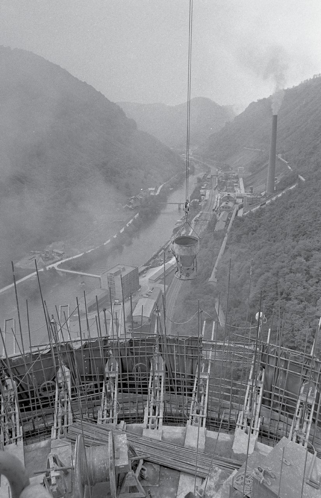
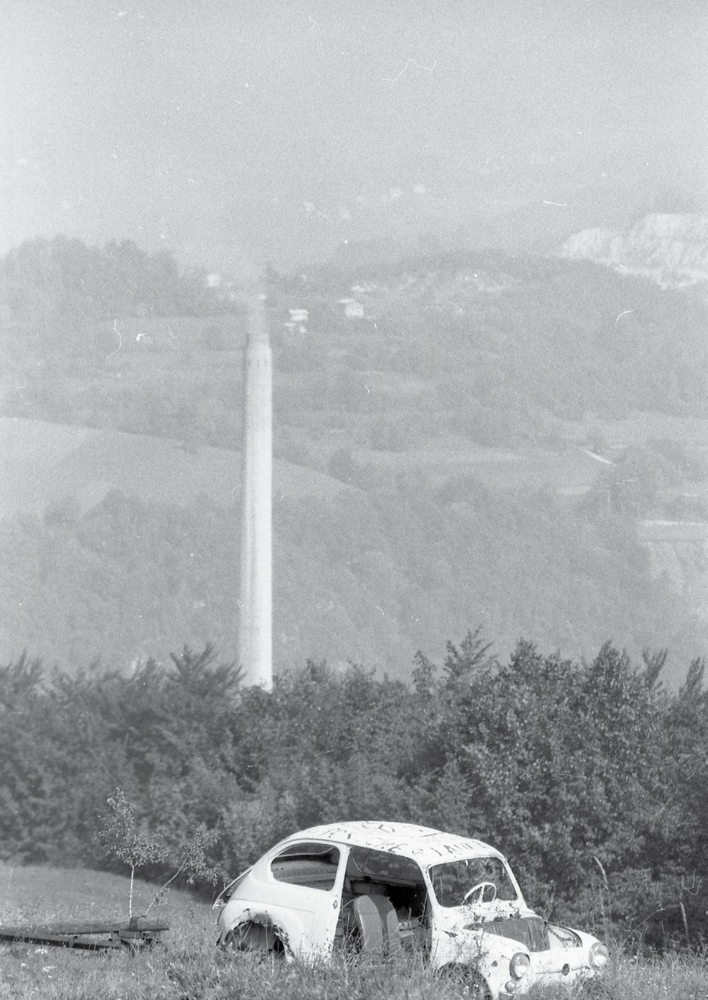
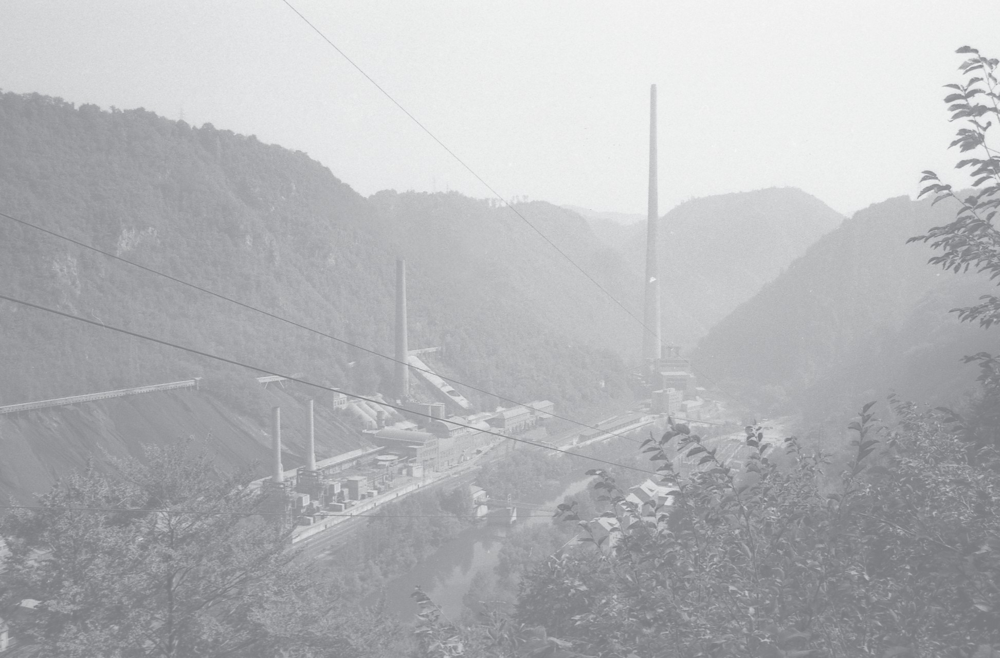
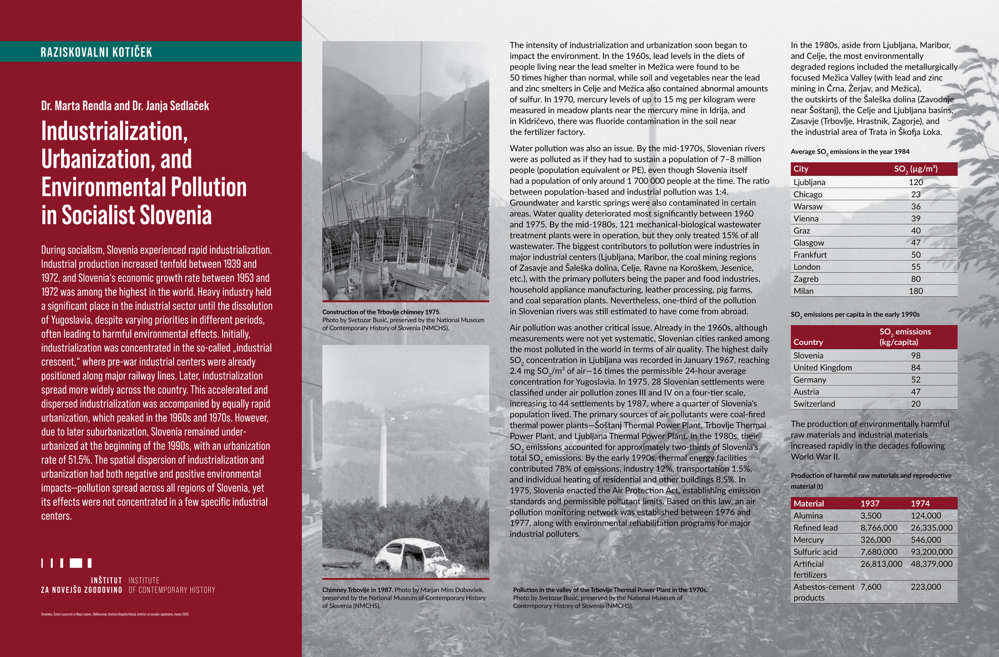

Dr. Marta Rendla
Dr. Janja Sedlaček
During socialism, Slovenia experienced rapid industrialization. Industrial production increased tenfold between 1939 and 1972, and Slovenia‘s economic growth rate between 1953 and 1972 was among the highest in the world. Heavy industry held a significant place in the industrial sector until the dissolution of Yugoslavia, despite varying priorities in different periods, often leading to harmful environmental effects. Initially, industrialization was concentrated in the so-called „industrial crescent,“ where pre-war industrial centers were already positioned along major railway lines. Later, industrialization spread more widely across the country. This accelerated and dispersed industrialization was accompanied by equally rapid urbanization, which peaked in the 1960s and 1970s. However, due to later suburbanization, Slovenia remained underurbanized at the beginning of the 1990s, with an urbanization rate of 51.5%. The spatial dispersion of industrialization and urbanization had both negative and positive environmental impacts—pollution spread across all regions of Slovenia, yet its effects were not concentrated in a few specific industrial centers.


The intensity of industrialization and urbanization soon began to impact the environment. In the 1960s, lead levels in the diets of people living near the lead smelter in Mežica were found to be 50 times higher than normal, while soil and vegetables near the lead and zinc smelters in Celje and Mežica also contained abnormal amounts of sulfur. In 1970, mercury levels of up to 15 mg per kilogram were measured in meadow plants near the mercury mine in Idrija, and in Kidričevo, there was fluoride contamination in the soil near the fertilizer factory.
Water pollution was also an issue. By the mid-1970s, Slovenian rivers were as polluted as if they had to sustain a population of 7–8 million people (population equivalent or PE), even though Slovenia itself had a population of only around 1 700 000 people at the time. The ratio between population-based and industrial pollution was 1:4. Groundwater and karstic springs were also contaminated in certain areas. Water quality deteriorated most significantly between 1960 and 1975. By the mid-1980s, 121 mechanical-biological wastewater treatment plants were in operation, but they only treated 15% of all wastewater. The biggest contributors to pollution were industries in major industrial centers (Ljubljana, Maribor, the coal mining regions of Zasavje and Šaleška dolina, Celje, Ravne na Koroškem, Jesenice, etc.), with the primary polluters being the paper and food industries, household appliance manufacturing, leather processing, pig farms, and coal separation plants. Nevertheless, one-third of the pollution in Slovenian rivers was still estimated to have come from abroad.
Air pollution was another critical issue. Already in the 1960s, although measurements were not yet systematic, Slovenian cities ranked among the most polluted in the world in terms of air quality. The highest daily SO2 concentration in Ljubljana was recorded in January 1967, reaching 2.4 mg SO2/m³ of air—16 times the permissible 24-hour average concentration for Yugoslavia. In 1975, 28 Slovenian settlements were classified under air pollution zones III and IV on a four-tier scale, increasing to 44 settlements by 1987, where a quarter of Slovenia‘s population lived. The primary sources of air pollutants were coal-fired thermal power plants—Šoštanj Thermal Power Plant, Trbovlje Thermal Power Plant, and Ljubljana Thermal Power Plant. In the 1980s, their SO2 emissions accounted for approximately two-thirds of Slovenia’s total SO2 emissions. By the early 1990s, thermal energy facilities contributed 78% of emissions, industry 12%, transportation 1.5%, and individual heating of residential and other buildings 8.5%. In 1975, Slovenia enacted the Air Protection Act, establishing emission standards and permissible pollutant limits. Based on this law, an air pollution monitoring network was established between 1976 and 1977, along with environmental rehabilitation programs for major industrial polluters.

In the 1980s, aside from Ljubljana, Maribor, and Celje, the most environmentally degraded regions included the metallurgically focused Mežica Valley (with lead and zinc mining in Črna, Žerjav, and Mežica), the outskirts of the Šaleška dolina (Zavodnje near Šoštanj), the Celje and Ljubljana basins, Zasavje (Trbovlje, Hrastnik, Zagorje), and the industrial area of Trata in Škofja Loka.
| City | SO2(μg/m³) |
| Ljubljana | 120 |
| Chicago | 23 |
| Warsaw | 36 |
| Vienna | 39 |
| Graz | 40 |
| Glasgow | 47 |
| Frankfurt | 50 |
| London | 55 |
| Zagreb | 80 |
| Milan | 180 |
| Country | SO2 emissions (kg/capita) |
| Slovenia | 98 |
| United Kingdom | 84 |
| Germany | 52 |
| Austria | 47 |
| Switzerland | 20 |
The production of environmentally harmful raw materials and industrial materials increased rapidly in the decades following World War II.
| Material | 1937 | 1974 |
| Alumina | 3,500 | 124,000 |
| Refined lead | 8,766,000 | 26,335,000 |
| Mercury | 326,000 | 546,000 |
| Sulfuric acid | 7,680,000 | 93,200,000 |
| Artificial fertilizers | 26,813,000 | 48,379,000 |
| Asbestos-cement products | 7,600 | 223,000 |
***
